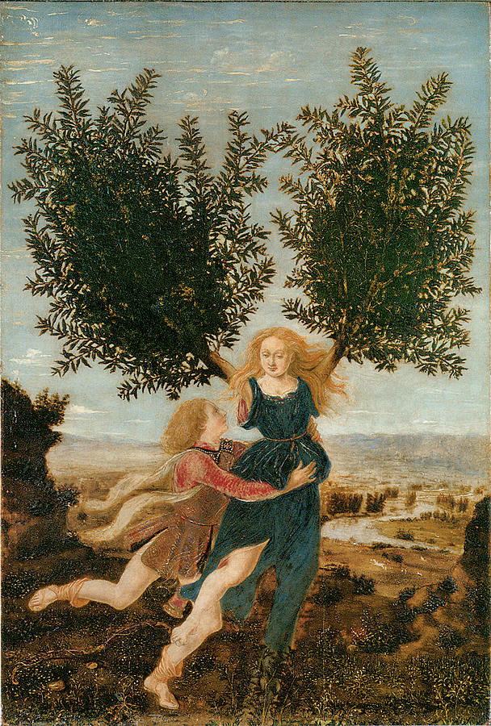
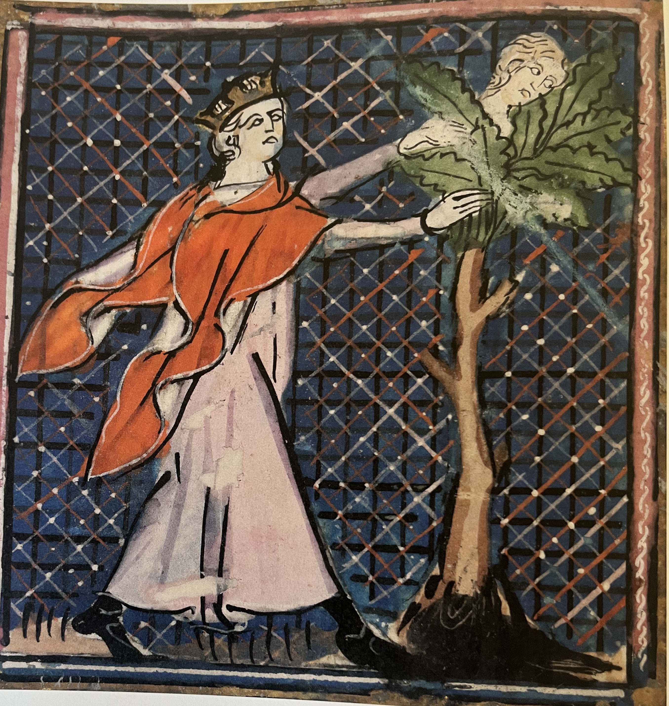

This week is about the invention of art and of the artist, the influence big capital has on that, and the change in perspective that we have on art.
The two video's you have watched hopefully bring home the point that it were the Medici that started artschools, museums (in the form of galleries) and individual artists. They began to commission art in a way that was previously only done by the clergy and by nobility.
All this led to a first step in what we (following Hegel) call the De-deification (Entgötterung) of the arts – a process that we will follow during the remainder of this module.
In the following exercises you are invited to follow up on this analysis and connect it to your own artistic practice.
Have a look at the image below. This is a depiction of the story of Apollo and Daphne (from Ovidius Metamorphoses). It was painted around 1475 by Piero del Pollaiuolo. Given its format and the quality of the materials used, this painting is supposed to be commissioned by a prominent and wealthy client, and recently this client has been identified as (probably) Lorenzo de' Medici.

Compare this version of the story with the one below, that was painted only fifty years earlier (probably by the miniaturist that illustrated the Roman de Fauvel). Given what you know about the Medici and the change they caused in the role and perspective of art, can you reflect on the obvious differences between these two painting?

Architecture has always been a method to display wealth and power. From ancient times until today, wealthy and powerful people have always showed their prowess with buildings – and the Medici are no exception.
Try to find a few important buildings that are centuries apart – think about the trio Pyramid of Giza - Pantheon in Rome - Cathedral at Chartres. Now compare these with some of the buildings that are associated with the Medici.
1. Can you find ways in which the Medici used this architecture to display their wealth? Think about materials, scale, location, symbolism, ... Is there a difference in their use of these techniques, compared to the other important buildings?
2. Can you find contemporary examples that have the same effect?
During our discussion on Göbekli Tepe, we talked at quite some length about the ritualistic practice that surrounded the T-shaped pillars – and in general, all 'artworks' before modern time.
1. Can you find a work from the times of the Italian Renaissance and compare this to a ritual or collective practice from earlier societies? What has changed and what has stayed the same?
2. In the second video, we talked about the mechanical and liberal arts and the way that the Medici changed this perspective. Can you relate the works you have found to the statement of Talon-Hugon with which we ended this second video?
Avec l'ennoblissement de la peinture et de la sculpture, cette bipartation devient inopérante et obsolète : la distinction entre mécanique et libéral a sauté. Ce domaine a une consistance et une unité propres, qui le distinguent du reste des activités humaines. Ainsi, l'expression de "beaux-arts" est plus qu'une expression : c'est une nouvell catégorie mentale ! (Talon-Hugon, Classicisme et Lumières. pp.43f.)
Reflect on your own artistic or design practice in relation to the ideas discussed in this chapter. Who – or what – plays the role of the patron in your work, and how does technology shape what you make?
Identify one concrete force that influences your work. This could be an institution (school, funding body), a client, an audience, a platform (e.g. Instagram, TikTok), or even an algorithm.
Identify the technologies you use (software, tools, platforms, AI, etc.). Describe how it does not just enables, but also limits or shapes your work.
In what sense is your situation similar to – or different from – art under Medici patronage?